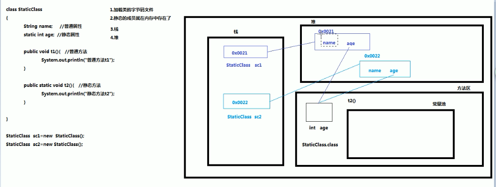

Spring之static属性的自动注入
结论：Spring不支持static属性的自动注入！
静态属性 静态属性和非静态属性的区别： 1、在内存中存放位置不同 所有带static修饰符的属性或者方法都存放在内存中的方法区 而非静态属性存放在内存中的堆区
静态属性在内存中的分布图 
Spring依赖注入源码 Spring在创建一个bean的时候，还要去填充bean的属性，大致流程如下：
反射创建bean // createBeanInstance
填充bean // populateBean
初始化bean // initializeBean（包括前、后置增强）
注册bean的销毁方法 // registerDisposableBeanIfNecessary
自动注入逻辑在populateBean中：
1 2 3 4 5 6 7 8 9 10 11 12 13 14 15 16 17 protected void populateBean (String beanName, RootBeanDefinition mbd, @Nullable BeanWrapper bw) { ... for (BeanPostProcessor bp : getBeanPostProcessors()) { if (bp instanceof InstantiationAwareBeanPostProcessor) { InstantiationAwareBeanPostProcessor ibp = (InstantiationAwareBeanPostProcessor) bp; PropertyValues pvsToUse = ibp.postProcessProperties(pvs, bw.getWrappedInstance(), beanName); if (pvsToUse == null ) { if (filteredPds == null ) { filteredPds = filterPropertyDescriptorsForDependencyCheck(bw, mbd.allowCaching); } } ... if (pvs != null ) { applyPropertyValues(beanName, mbd, bw, pvs); } }
而除了applyPropertyValues可以填充bean的属性外，更多的填充逻辑（自动注入）是在InstantiationAwareBeanPostProcessor中的postProcessProperties里面，字段注入就是常用的@Autowired、@Resource注解。
InstantiationAwareBeanPostProcessor是一个接口，它的子类中实现@Autowired注入的是AutowiredAnnotationBeanPostProcessor，实现@Resource注入的是CommonAnnotationBeanPostProcessor。
接下来分析一下AutowiredAnnotationBeanPostProcessor是怎么进行字段注入的。流程就是先找到需要通过findAutowiringMetadata找到需要Autowired的元数据（字段、方法） ，然后再inject。
1 2 3 4 5 6 7 8 9 10 11 12 13 14 15 16 @Override public PropertyValues postProcessProperties (PropertyValues pvs, Object bean, String beanName) { InjectionMetadata metadata = findAutowiringMetadata(beanName, bean.getClass(), pvs); try { metadata.inject(bean, beanName, pvs); } catch (BeanCreationException ex) { throw ex; } catch (Throwable ex) { throw new BeanCreationException (beanName, "Injection of autowired dependencies failed" , ex); } return pvs; }
寻找bean对象中被@Autowired注解修饰并等待注入的元数据。
1 2 3 4 5 6 7 8 9 10 11 12 13 14 15 16 17 18 19 20 private InjectionMetadata findAutowiringMetadata (String beanName, Class<?> clazz, @Nullable PropertyValues pvs) { String cacheKey = (StringUtils.hasLength(beanName) ? beanName : clazz.getName()); InjectionMetadata metadata = this .injectionMetadataCache.get(cacheKey); if (InjectionMetadata.needsRefresh(metadata, clazz)) { synchronized (this .injectionMetadataCache) { metadata = this .injectionMetadataCache.get(cacheKey); if (InjectionMetadata.needsRefresh(metadata, clazz)) { if (metadata != null ) { metadata.clear(pvs); } metadata = buildAutowiringMetadata(clazz); this .injectionMetadataCache.put(cacheKey, metadata); } } } return metadata; }
最关键的地方来了，接下来会 判断这个字段是不是static的，如果是，那么会发出日志提醒，并且直接返回，不进行注入了
1 2 3 4 5 6 7 8 9 10 11 12 13 14 15 16 17 18 19 20 21 22 23 24 25 26 27 28 29 30 31 32 33 34 35 36 37 38 39 40 41 42 43 44 45 46 47 48 49 50 51 52 53 54 55 56 57 58 59 60 61 62 63 private InjectionMetadata buildAutowiringMetadata (final Class<?> clazz) { if (!AnnotationUtils.isCandidateClass(clazz, this .autowiredAnnotationTypes)) { return InjectionMetadata.EMPTY; } List<InjectionMetadata.InjectedElement> elements = new ArrayList <>(); Class<?> targetClass = clazz; do { final List<InjectionMetadata.InjectedElement> currElements = new ArrayList <>(); ReflectionUtils.doWithLocalFields(targetClass, field -> { MergedAnnotation<?> ann = findAutowiredAnnotation(field); if (ann != null ) { if (Modifier.isStatic(field.getModifiers())) { if (logger.isInfoEnabled()) { logger.info("Autowired annotation is not supported on static fields: " + field); } return ; } boolean required = determineRequiredStatus(ann); currElements.add(new AutowiredFieldElement (field, required)); } }); ReflectionUtils.doWithLocalMethods(targetClass, method -> { Method bridgedMethod = BridgeMethodResolver.findBridgedMethod(method); if (!BridgeMethodResolver.isVisibilityBridgeMethodPair(method, bridgedMethod)) { return ; } MergedAnnotation<?> ann = findAutowiredAnnotation(bridgedMethod); if (ann != null && method.equals(ClassUtils.getMostSpecificMethod(method, clazz))) { if (Modifier.isStatic(method.getModifiers())) { if (logger.isInfoEnabled()) { logger.info("Autowired annotation is not supported on static methods: " + method); } return ; } if (method.getParameterCount() == 0 ) { if (logger.isInfoEnabled()) { logger.info("Autowired annotation should only be used on methods with parameters: " + method); } } boolean required = determineRequiredStatus(ann); PropertyDescriptor pd = BeanUtils.findPropertyForMethod(bridgedMethod, clazz); currElements.add(new AutowiredMethodElement (method, required, pd)); } }); elements.addAll(0 , currElements); targetClass = targetClass.getSuperclass(); } while (targetClass != null && targetClass != Object.class); return InjectionMetadata.forElements(elements, clazz); }
在启动Spring容器的时候，console管理台会打印出相关日志：
1 2024-05-23 10:44:10.552 INFO 76746 --- [main] f.a.AutowiredAnnotationBeanPostProcessor : Autowired annotation is not supported on static fields: private static com.example.demo.DemoService com.example.demo.SpringContextUtils.demoService
总的来说，就一句话，spring在使用自动注入对静态属性进行注入时，会忽略掉这个属性，不去注入 ，也就是说Spring是有能力去注入静态字段的，但是Spring没有选择注入，为什么呢？
可能是因为Spring的设计理念是管理bean对象，只有属于对象的属性Spring才去进行管理，如果是static的话，那么这个属性就是属于类了，这个时候Spring去进行管理貌似不符合它的设计理念，所以Spring直接忽略掉了；另外如果一个bean修改了这个属性值，那么所有bean的这个属性值都会受到影响，因为这个属性是属于类的，这个时候可能就会问题。
那么有没有办法实现静态字段注入呢？
可以的，常见的有以下几种方式：
方式一：将@Autowired加到构造方法上 1 2 3 4 5 6 7 8 9 10 11 12 13 14 @Component public class Test { private static UserService userService; @Autowired public Test (UserService userService) { Test.userService = userService; } public static void test () { userService.test(); } }
方式二：用@PostConstruct注解 1 2 3 4 5 6 7 8 9 10 11 12 13 14 15 16 17 @Component public class Test { private static UserService userService; @Autowired private UserService userService2; @PostConstruct public void beforeInit () { userService = userService2; } public static void test () { userService.test(); } }
方式三：手动注入ApplicationContext ApplicationContextAware接口能够轻松感知并在Spring中获取应用上下文，进而访问容器中的其他Bean和资源，这增强了组件间的解耦，了代码的灵活性和可扩展性，是Spring框架中实现高级功能的关键接口之一。
1 2 3 4 5 6 7 8 9 10 11 12 13 14 15 16 17 18 19 20 21 22 23 24 25 26 @Component public class SpringContextUtil implements ApplicationContextAware { private static ApplicationContext applicationContext; @Override public void setApplicationContext (ApplicationContext context) throws BeansException { SpringContextUtil.applicationContext = context; } public static ApplicationContext getApplicationContext () { return applicationContext; } public static <T> T getBean (Class<T> beanClass) { if (applicationContext != null ) { return applicationContext.getBean(beanClass); } else { throw new IllegalStateException ("ApplicationContext is not initialized yet!" ); } } }
Demo：
1 2 3 4 5 6 7 public class Test { public static void test () { UserService userService = SpringContextUtil.getBean(UserService.class); userService.test(); } }
方式四：在方法上使用@Autowired注解，在方法里面去对静态字段进行赋值
注意：这个方法也不能是静态的，否则也会被spring会忽略掉。
1 2 3 4 5 6 7 8 9 10 @Component public class Test { private static UserService userService; @Autowired public void setUserService (UserService userService2) { Test.userService = userService2; } }
参考文档：
静态属性和静态方法
为什么不支持static字段的注入？
Spring Boot中静态方法获取bean的三种方式
 微信
微信